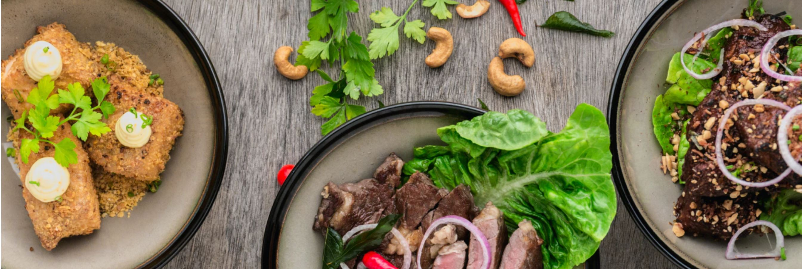
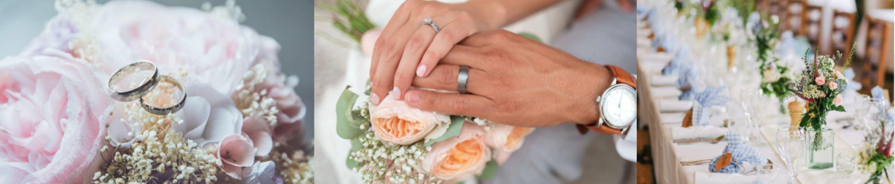

A rustic barn wedding venue in the heart of Virginia Wine COuntry, less than an hour from Washington, DC. Let our Picturesque, panoramic views set the backdrop for your outdoor ceremony and cocktail hour, then dance the night away under the twinkle lights in our climate countrolled stable. Accomodating up to 200 guests, The Stable at Pines of Nowhere's barn wedding venue combines rustic elegance with personalized service to create an unforgettable celebration

Wheather you are looking to break out of the four walls of your office for next meeting or in search of a unique team building activity, our work and play packages can be customized to meet your teams goals and objectives.
Our meeting space accomodates groups up to 65 guests and includes AV equipment. Whether you're coming for the day or evening, enjoy farm-to-table fare to keep your team fueled.